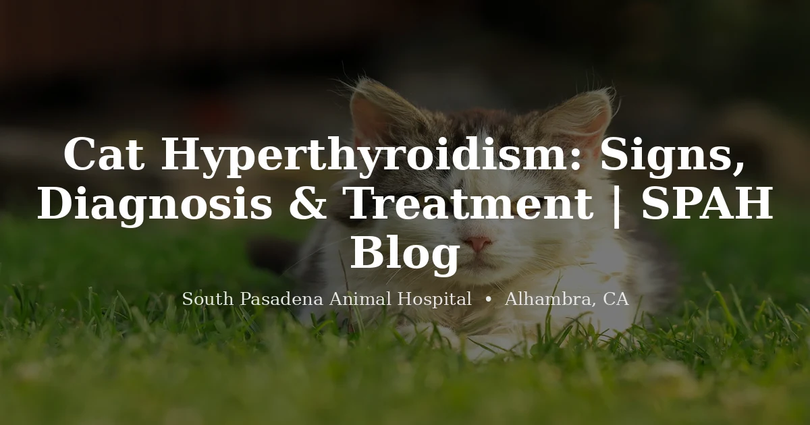

April 20, 2026 · 7 min read
Cat Hyperthyroidism: Signs, Diagnosis, and What Treatment Looks Like

Hyperthyroidism is the most common hormonal disorder in middle-aged to older cats — studies suggest it affects roughly 10% of cats over age 10. Despite how common it is, many owners miss the early signs because the cat seems active and even has a good appetite. That combination — weight loss plus good appetite — is actually the classic presentation, and it is worth knowing about before your cat reaches that point. If you have questions or want bloodwork done, our cat vet in Alhambra is here to help.
What Is Hyperthyroidism?
The thyroid gland consists of two small lobes sitting on either side of the trachea. It produces thyroid hormone (T4), which regulates metabolism throughout the body. In hyperthyroid cats, one or both lobes develop a benign adenoma — an overgrowth of thyroid tissue — that begins producing excess T4.
The result is a metabolism running at full throttle. The cat burns through calories, loses weight despite eating well, develops a racing heart rate, and can accumulate serious secondary complications if the condition goes untreated. The vast majority of cases (>95%) involve benign adenomas; malignant thyroid carcinoma is rare but does occur. Understanding the distinction matters for choosing the right treatment approach.
Signs of Hyperthyroidism in Cats
The signs range from subtle early changes to more obvious physical decline. Here is what to watch for:
- Weight loss despite normal or increased appetite — the cardinal sign. Do not dismiss a cat that "eats great" but is getting thinner.
- Increased thirst and urination
- Hyperactivity, restlessness, or seeming "anxious" in an older cat who used to be calm
- Vomiting or diarrhea
- Poor, unkempt coat — the cat may stop grooming as effectively
- Increased vocalization, especially at night
- Palpable thyroid nodule — a vet may feel an enlarged lobe on physical exam
- Heart murmur or elevated heart rate due to secondary cardiac effects
Because older cats often have multiple issues developing simultaneously, some of these signs — vomiting, weight loss, increased drinking — overlap with other diseases like chronic kidney disease, diabetes, and inflammatory bowel disease. Bloodwork is what distinguishes them.
Why Early Diagnosis Matters
Untreated hyperthyroidism is progressive and damaging. The sustained high cardiac output causes hypertrophic cardiomyopathy (thickening of the heart muscle), systemic hypertension, and eventually heart failure if left unchecked. These cardiac effects are what make timely diagnosis so important — not just managing the symptoms.
There is also an important interplay with kidney disease. The elevated blood flow that accompanies hyperthyroidism can make kidneys appear to function better than they actually are. When hyperthyroidism is treated and blood pressure normalizes, previously hidden chronic kidney disease (CKD) may become clinically apparent. This is not a reason to avoid treatment — it is a reason to monitor kidney function carefully before and after starting treatment, and to work with your vet on a staged approach if needed. Scheduling a wellness exam is a good first step toward catching any of these issues early.
Diagnosis: What Testing Involves
Diagnosis is typically straightforward. A blood panel that includes a total T4 (thyroxine) level is the primary test — most hyperthyroid cats have a clearly elevated T4 that confirms the diagnosis on the first draw.
In borderline cases where a cat has classic signs but a T4 in the high-normal range, a free T4 (fT4) test or repeat testing a few weeks later is often recommended. T4 levels can fluctuate into the normal range intermittently in early or mild disease, so a single normal result does not definitively rule out hyperthyroidism when the clinical picture is suggestive.
Beyond the thyroid test, a complete blood panel and urinalysis help assess overall organ function — liver values, kidney markers, blood counts — and allow your vet to evaluate the kidney-heart interplay before any treatment decision is made. Blood pressure measurement is also standard, since hypertension is a common complication.
Treatment Options
There are three main treatment options for feline hyperthyroidism, each with different trade-offs in terms of convenience, cost, cure potential, and risk. Your vet will help determine which is most appropriate based on your cat's age, overall health, and kidney function.
Methimazole (oral medication)
The most commonly used first-line treatment. Methimazole reduces T4 production but does not cure the underlying adenoma — medication must continue for the rest of the cat's life. It is given as a pill (typically twice daily) or as a transdermal gel applied to the inner ear flap, which some cats tolerate more easily than oral dosing. Side effects are uncommon but include vomiting, lethargy, facial scratching, and — rarely — blood cell changes that require monitoring. Once the cat is on a stable dose, blood tests every 3 to 6 months are typically recommended to track T4 levels and kidney function.
Radioactive iodine (I-131)
Considered the gold standard curative treatment. A single injection of radioactive iodine selectively destroys overactive thyroid tissue with minimal effect on surrounding structures, including the parathyroid glands. Cure rates exceed 95%. The procedure requires a short hospital stay for radiation safety purposes, and the cat cannot go home until radiation levels fall below regulatory thresholds. Not every veterinary clinic offers I-131 (it requires a licensed facility), but it is the definitive option for cats who are good candidates. No ongoing medication is needed after successful treatment.
Surgical thyroidectomy
Removes the affected thyroid lobe or lobes. It is effective but carries higher procedural risk than I-131, particularly the risk of accidentally damaging the parathyroid glands, which sit adjacent to the thyroid and regulate calcium. Hypoparathyroidism from parathyroid damage can cause serious, life-threatening hypocalcemia. Surgery is less commonly chosen when I-131 is available, but may be appropriate in specific situations where other treatments are not suitable.
Prescription iodine-restricted diet (Hill's y/d)
Reduces T4 by severely restricting dietary iodine, which the thyroid requires to make thyroid hormone. It can be effective when followed strictly, but the cat must eat absolutely nothing other than the prescription food — no treats, no table food, no access to other pets' bowls. This makes it challenging to maintain in multi-cat households or in cats with other dietary needs. It tends to be used when other options are contraindicated or declined.
Life After Diagnosis
Most cats do very well once hyperthyroidism is managed. Weight typically returns to normal within a few months of starting treatment, energy levels stabilize, and the cardiovascular stress on the heart begins to reverse.
The most important follow-up concern is kidney monitoring. As noted above, some cats will develop clinically apparent CKD once hyperthyroidism is controlled and blood flow normalizes. Your vet will check kidney values at each recheck visit — typically at 3 to 4 weeks, then 3 to 6 months after starting treatment, and every 6 months once stable. This monitoring is not a sign that something went wrong; it is simply responsible long-term management of a senior cat's overall health.
With the right treatment plan and consistent follow-up, hyperthyroid cats routinely go on to live comfortable, good-quality lives for years after diagnosis.
Frequently Asked Questions
My older cat is eating well but losing weight — should I be worried?
Yes — this is the classic hyperthyroidism presentation, and it is one of the situations where a good appetite can be misleading. Weight loss in an older cat that is eating normally or even more than usual warrants a vet visit and bloodwork, even if the cat seems otherwise active and well. The sooner the diagnosis is made, the sooner you can prevent cardiac and hypertensive complications.
Is hyperthyroidism painful for cats?
The condition itself is not typically painful in the early stages. However, the cardiovascular and hypertensive complications that develop if hyperthyroidism is left untreated — thickened heart muscle, elevated blood pressure, secondary damage to the eyes and kidneys — cause significant physical stress on the body. Hypertension in particular can cause sudden vision loss from retinal detachment. Early treatment is what prevents these outcomes.
How often does my hyperthyroid cat need to be monitored?
Initially every 3 to 6 weeks after starting medication in order to confirm the T4 level is controlled and adjust the dose if needed. Once stable, typically every 6 months, including bloodwork (T4, kidney panel, blood count) and blood pressure measurement. Cats treated with radioactive iodine or surgery are generally monitored at similar intervals but without the ongoing medication adjustments.
Can hyperthyroidism be prevented?
There is no known way to prevent feline hyperthyroidism. Annual wellness exams in cats over 7 to 8 years old, including bloodwork, allow early detection before complications like heart disease or hypertension have a chance to develop. Catching it early significantly improves outcomes and keeps treatment options open.
Do you see cats at SPAH?
Yes — we see dogs, cats, and exotic pets. If your senior cat is due for bloodwork or you have noticed any of the signs described above, you can learn more on our cat vet page or call us at (626) 441-1314 to schedule an appointment.
Taking the Next Step
Hyperthyroidism is one of the most manageable conditions in older cats when it is caught early. If your senior cat has been losing weight, drinking more, or acting unusually restless, bloodwork is the only way to know what is actually going on. Schedule a wellness visit to get a baseline, or contact us with any questions about your cat's health — we are happy to help you figure out the right next step.